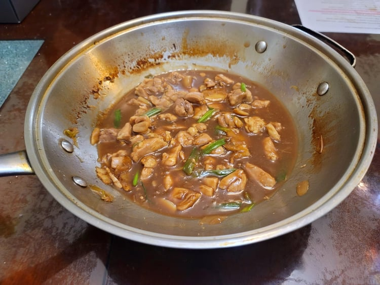

Lo Gyong Gai (Old Ginger Chicken)

Ingredients:
- 1 1/2 lb Chicken thighs, boneless, skinless, cut into 1 inch pieces
- 1 tbsp Canola oil
- 6 slices Ginger, 1/4 inch thick, smashed
- 3 Shallots, quartered
- 3 Scallions, whites and greens separated, cut into 2 inch pieces, whites smashed
- 4 cloves Garlic, halved, smashed
- 1/4 cup Shaoxing wine
- 1 1/2 cup Low sodium chicken broth
- 2 tbsp Soy sauce
- 1 tsp Light brown sugar
- 1 tsp Dark soy sauce
- 1/4 tsp White pepper
- Optional: 2 tsp Oyster sauce
- 1 tbsp Cornstarch, mixed with 1 tbsp Water
Instructions:
- Heat the oil in a wok over high until it just begins to smoke. Then add in the smashed ginger and fry for 15 seconds
- Add the chicken to the wok in a single layer and sear for 45 seconds on one side, flip, and then sear the other side for 30 seconds.
- Add in the shallots, scallion whites, and garlic. Stir-fry for 30 seconds.
- Add in the Shaoxing wine and stir-fry for 20 seconds. Then add in the chicken stock, brown sugar, soy sauce, dark soy sauce, white pepper, and oyster sauce if using. Cover and continue to cook on high heat for 5 minutes.
- Uncover and cook for another 7 minutes for the liquid to reduce. Mix in the green parts of the scallions and then immediately stir in the cornstarch slurry to thicken the sauce. Remove from heat once the sauce has thickened.